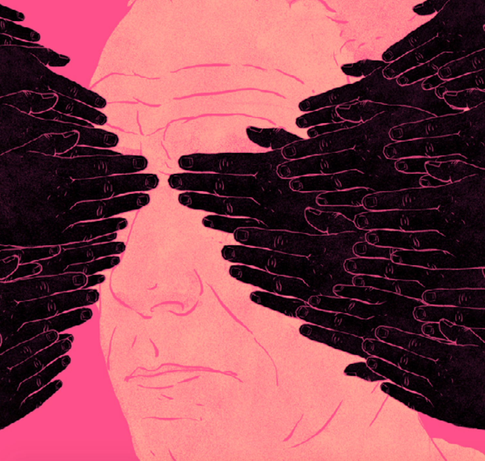
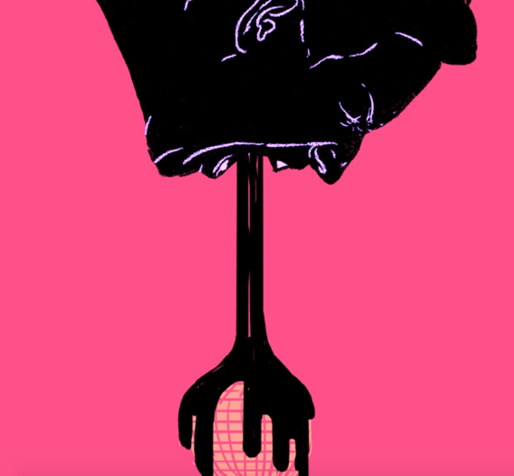
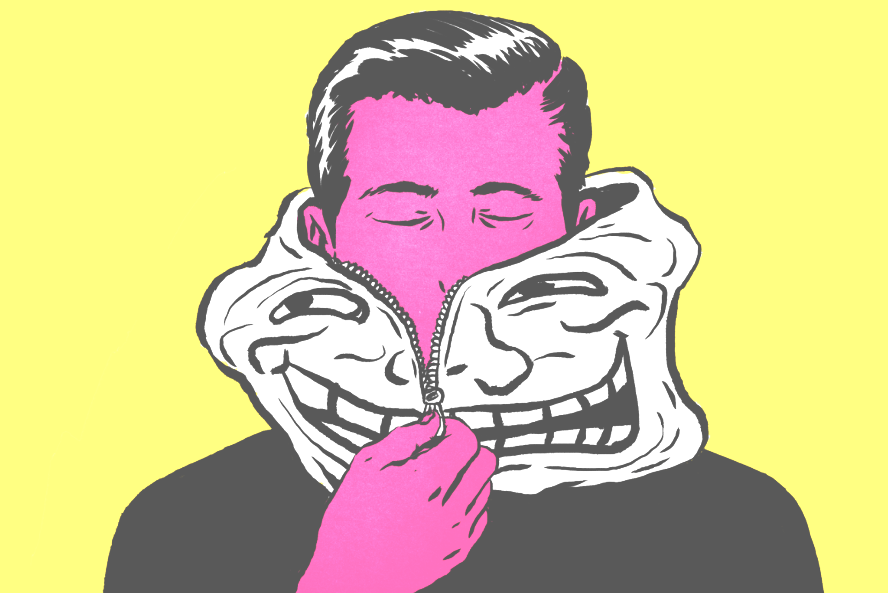
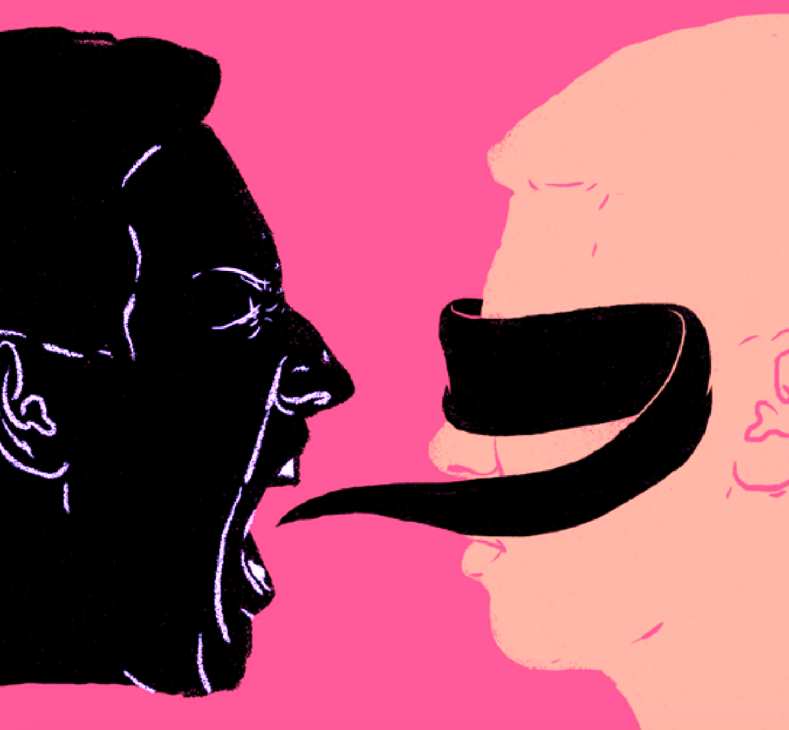
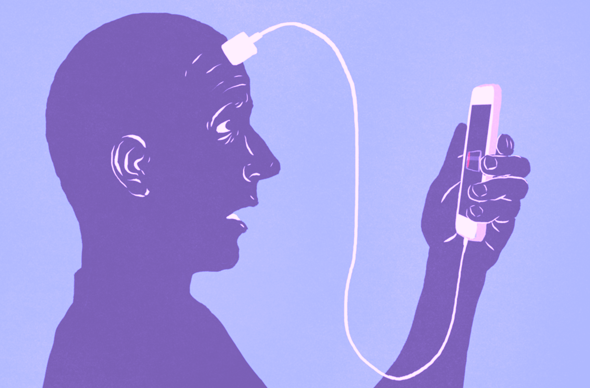

Data Ethics Records
Manosphere, Nov 2019
The PUA Community Dehumanizes Women While Granting All Sexual Agency to Men
To move from an “average, frustrated chump” to a pick-up artist (PUA), men must
learn a series of skills that break down the rules of courtship and romance. the Seduction
subreddit has more than 200,000
subscribers. On such boards, men swap tips on how to be more “alpha” and attract
women through a variety of tactics, including “negging”—subtle put-downs that
make women eager for approval—kino, or touching, and ways to get past “token
resistance,” or women’s refusal to have sex.

While the gender politics of the seduction community were always problematic,
in the last few years, a subset of pick-up artistry has incorporated the ideology of
Men’s Rights Activism. In online forums like theredpill subreddit or the blog Return
of Kings, posters blame feminism for creating an unbalanced “sexual marketplace”
in which rich, good-looking, and confident men get their pick of women, while
most men are either left “involuntarily celibate,” or resigned to sleeping with old
or overweight women. These posts characterize this state of affairs as not simply
against their wishes, but as detrimental to society.
A blog post on Return of Kings, for instance, reads:
"There’s no denying that long term relationships are on the decline. Social conservatives are
often described as hateful and misogynist for railing against promiscuity, but the
statistics don’t lie. Marriages in which the wife was a virgin
have an 80% chance of succeeding, while the figure for brides who have had 15
or more premarital partners is just 20%. Basically, there’s an ever-increasing
number of washed-up old hags out there who are coming to regret their earlier
promiscuity, and are now facing the realization that they will probably die
alone and childless"
ALGORITHMS, Nov 2019
The White Student Union
Andrew Anglin is best known as the founder and editor of The Daily Stormer, an
openly Neo-Nazi news outlet that claims to be “The World’s Most Visited Alt-Right
Web Site.” Modeled after 4chan and 8chan, the site heavily utilizes racist memes
and imagery and encourages active comment threads below each piece. 4chan
greatly influenced Anglin’s own fascist beliefs, and he claims that he is “at heart a
troll.""
Anglin is acutely aware of the influence he wields among his site’s readers, known
as the “Stormer Troll Army” or just the “Stormers.” According to the Southern
Poverty Law Center, he explicitly stated that “using the daily news is a means to
propagandize people.” He also often mobilizes his followers by directing them to
harass specific targets or manipulate the media on his behalf.

This was the case in November 2015, when he directed his followers to set up fake
White Student Union pages on Facebook for universities throughout the United
States—and then contact local media outlets about the groups. He stated openly
that he hoped real groups would indeed crop up on college campuses, so perhaps
he thought this stunt would be the first step towards that goal. Alternatively, he
may simply have been hoping to prove he could trick the media into moral outrage
and simultaneously spread some racial tension throughout college campuses.
In the latter sense, he was highly successful. Local media outlets promptly reported
the story and amplified his message (although some did note it was unclear
whether the groups existed outside of Facebook). USA Today picked up the
story and covered it without a hint of skepticism. Soon, an anonymous user on
Medium revealed the pages as a hoax engineered by Anglin. By this point, however, the entire
incident was considered a newsworthy controversy, and was thus
covered by Gawker, The Daily Beast, and even the The Washington Post.
ALGORITHMS, Nov 2019
Bots
Social bots are pieces of software that create content on social media and interact
with people. Increasingly, bots are used for political reasons: to inflate the numbers of
followers a politician has; to spread propaganda; to subtly influence political discourse; and
to aggregate and broadcast content.In countries ranging from
Azerbaijan to Italy to Venezuela, bots have been used by governments and political
elites, often to attack dissidents or manipulate news frames around an issue.

Bots were used extensively during the 2016 presidential election. For instance,
during the first presidential debate, bots generated 20% of the Twitter posts about
the debate, despite representing only
0.5% of users. Significantly more of
this traffic came from pro-Trump bots
than pro-Clinton bots. This remained
constant throughout the election;
researchers estimate that about a third of all pro-Trump tweets on Twitter were
generated by bots, more than four times that of pro-Clinton tweets. Many of
these bots spread what is known as “computational propaganda”: misinformation
and negative information about opposition candidates.165
CONSPIRACY THEORISTS, Nov 2019
Conspiracy Theorists
Conspiracy theories are driven by a
belief in the machinations of a powerful
group of people who have managed to
conceal their role in an event or situation.
The overarching themes of these theories have
remained remarkably consistent: they reliably express anxieties about loss of control
within a religious, political, or social order
These include:

• Islamophobia linked to the 9/11 terrorist attacks and the subsequent
increased public acknowledgment of American Muslims as members of
American society
• Fear of immigration, particularly from Muslim nations such as Syria
• Fear of the emasculation of men linked to the transformation of traditional
masculinity and feminists’ challenges to traditional gender roles
• Transphobia and homophobia linked to the rise of newly-articulated gender
identities including trans people and nonbinary individuals
• Fears of a vast Jewish conspiracy that controls the media
• Fears of losing control of key civic and educational institutions to so-called
“Cultural Marxism” (the Frankfurt school of critical theory) that, they claim,
dominates popular culture and discourse
• Fear of erosion of morality and traditional values by globalist liberal elites
ALGORITHMS, Dec 2016
Pizzagate
In early October 2016, Wikileaks posted a dump of 20,000 hacked emails from the
Gmail account of John Podesta, Hillary Clinton’s campaign chairman. Users on an
internet message board called 8chan/pol/—short for “politically incorrect”—immediately began
combing through the emails looking for damaging material about
Hillary Clinton. Using social media, they spread allegations that George Soros was
funding liberal protesters to disrupt Trump rallies, that a vast ring of pedophiles
was operating out of a Chevy Chase, Maryland pizza parlor, and that Clinton had
a secret desire to assassinate Julian Assange.
 Alex Jones's podcast called Info-War falsely reported specifically that Hillary Clinton was
sexually abusing children during satanic rituals in the basement of Comet Ping Pong, a
pizza store outside of Washington, D.C.
Listeners of the podcast spread the conspiracy theory on 4chan, 8chan,
and twitter.
This misinformation lead Edgar Maddison to travel from North Carolina
and fire three shots from an AR-15 rifle. No one was injured.
Alex Jones's podcast called Info-War falsely reported specifically that Hillary Clinton was
sexually abusing children during satanic rituals in the basement of Comet Ping Pong, a
pizza store outside of Washington, D.C.
Listeners of the podcast spread the conspiracy theory on 4chan, 8chan,
and twitter.
This misinformation lead Edgar Maddison to travel from North Carolina
and fire three shots from an AR-15 rifle. No one was injured.
SOCIAL MEDIA, 2016
Misleading News Directed at Michigan VotersPhillip N. Howard, a professor at the University of Oxford, found that almost half of all news directed at Michigan was fake.
ALGORITHMS, Aug 2019
The El Paso Walmart Shooter was Inspired by a Popular 8chan Theory Called "The Great Replacement" Before the shooter opened fire at a Walmart in El Paso, he posted a manifesto on 8chan. It explains his motivation when killing 20 pepole and injurying many more. His post stated his main motivation to go through out a mass shooting of because of a 8chan supremacist theory called "The Great Replacement". The idea is the "secret group of elites" are working to destroy the white race by replacing them with regugees and immigrants. 8chan is the perfect example of a negative agenda setting.